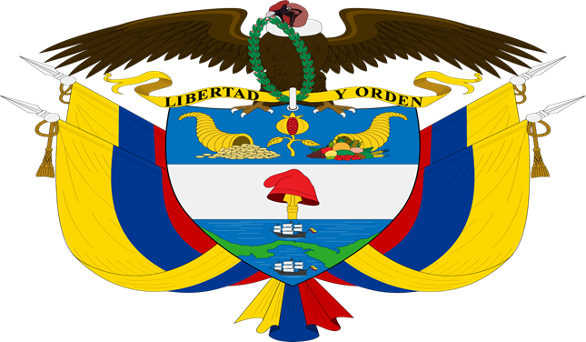

Origen
El Himno Nacional de Colombia fue compuesto como parte de una obra teatral en 1850. En 1887 se convirtió en himno oficial.
Significado de las primeras estrofas y el coro
El coro del himno representa la esperanza de un futuro prometedor y la superación de los sufrimientos de la lucha por la independencia.

Himno Antioqueño
El Himno Antioqueño celebra la libertad y el orgullo por la geografía de Antioquia. Su letra fue escrita por Epifanio Mejía en 1868.
Escudo de Colombia
El Escudo de Colombia, creado en 1834, simboliza la libertad, la victoria y la riqueza natural del país.
Bandera de Colombia
La bandera de Colombia, adoptada en 1861, simboliza la riqueza (amarillo), los mares (azul) y la sangre de los libertadores (rojo).